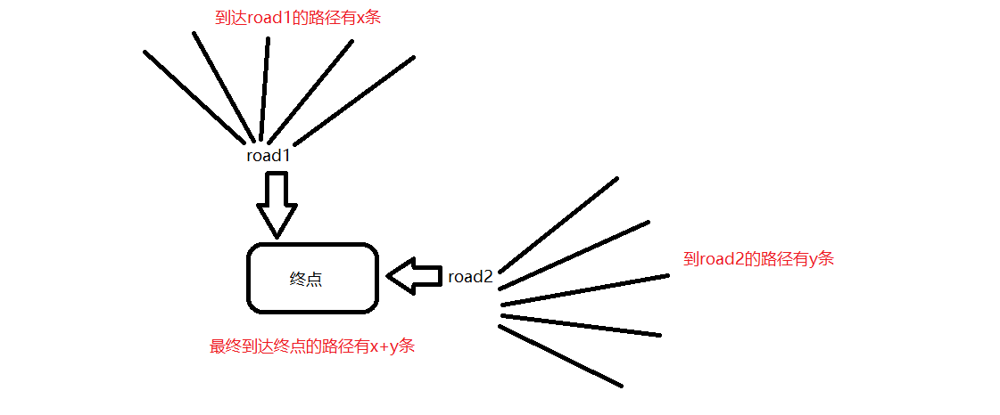

动态规划算法
前言
对于算法之类的问题，知识点还是有点薄弱，今天就来认识一下什么是动态规划算法，查漏补缺，每天学习一点。
动态规划是一种分阶段解决问题的数学思想，简单的来说就是大事化小，小事化了。
动态规划中有三个核心概念：
- 最优子结构
- 边界
- 状态转移公式
举一个例子：

假设只能通过road1或road2两条路径到达终点，到达road1有x条路径，到达road2有y条路径，所以到达终点的可能性就是 x+y
另一个列子：
有一个只能容纳10本书的单层书架，你每次只能放1本或2本书。要求用程序求出你将书架填满一共有多少种方法。
从书架上为0到放满的方法总数等于0本到9本的方法总数加0到8本的方法总数。也就是F(10)=F(8)+F(9)，依次类推得到：F(n) = F(n-1)+F(n-2)（n>=3）
- 最优子结构：F(10)=F(8)+F(9)
- 边界：当书架直接只有1 或 2 本书要放时，我们可以直接得到结果，无需花间，我们称F(1)和F(2)为边界。
- 状态转移公式：F(n) = F(n-1)+F(n-2)
leecode
不同路径II
一个机器人位于一个 m x n 网格的左上角 （起始点在下图中标记为“Start” ）。
机器人每次只能向下或者向右移动一步。机器人试图达到网格的右下角（在下图中标记为“Finish”）。
现在考虑网格中有障碍物。那么从左上角到右下角将会有多少条不同的路径？

网格中的障碍物和空位置分别用 1 和 0 来表示。
说明： m 和 n 的值均不超过 100。
示例 1:
输入:
[
[0,0,0],
[0,1,0],
[0,0,0]
]
输出: 2
解释:
3x3 网格的正中间有一个障碍物。
从左上角到右下角一共有 2 条不同的路径：
- 向右 -> 向右 -> 向下 -> 向下
- 向下 -> 向下 -> 向右 -> 向右
1 | /** |